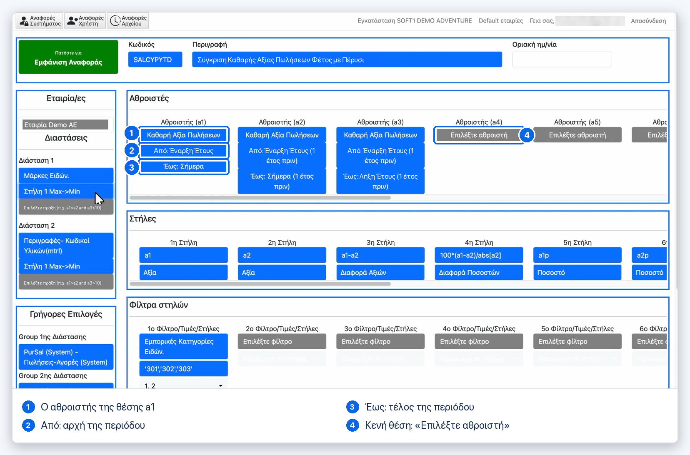

Αθροιστές
Οι αθροιστές είναι τα νούμερα της αναφοράς. Βάζετε έως 10, ο καθένας με δική του περίοδο.
Τι κάνει#
Ο αθροιστής υπολογίζει ένα ποσό για κάθε γραμμή: αξία πωλήσεων, ποσότητα, κέρδος κ.λπ. Παράδειγμα: «Καθαρή Αξία Πωλήσεων». Μια αναφορά έχει 10 θέσεις αθροιστών, με τα ονόματα a1 έως a9 και a0. Κάθε θέση έχει δικό της Από και Έως.
Πότε το χρησιμοποιώ#
Θέλετε δίπλα δίπλα τις πωλήσεις φέτος, πέρυσι και τον τρέχοντα μήνα. Βάζετε τον ίδιο αθροιστή τρεις φορές (a1, a2, a3), με τρεις διαφορετικές περιόδους.
Βήματα#
- Στις ρυθμίσεις, στην ενότητα Αθροιστές, βρείτε τη θέση Αθροιστής (a1).
- Πατήστε Επιλέξτε αθροιστή. Ανοίγει το Επιλέξτε Αθροιστή με τις στήλες Περιγραφή Αθροιστή και Κωδικός. Γράψτε στην Αναζήτηση για να βρείτε γρήγορα αυτόν που θέλετε.
-
Πατήστε Επιλογή στον αθροιστή που θέλετε.

Παράθυρο «Επιλέξτε Αθροιστή» -
Πατήστε Επιλέξτε από και ορίστε την αρχή της περιόδου.
- Πατήστε Επιλέξτε έως και ορίστε το τέλος της περιόδου.
- Επαναλάβετε για τις επόμενες θέσεις (a2, a3 …) όσες χρειάζεστε.
- Στην ενότητα Στήλες, γράψτε σε κάθε στήλη ποιον αθροιστή θα δείχνει (π.χ.
a1). - Για να αδειάσετε μια θέση, ανοίξτε το Επιλέξτε Αθροιστή και πατήστε Καθαρισμός αθροιστή.

Συμβουλές και συχνά λάθη#
- Ο αθροιστής δεν φαίνεται αν δεν μπει σε στήλη. Η θέση a1 υπολογίζεται, αλλά για να εμφανιστεί πρέπει να γράψετε
a1σε μία από τις Στήλες. - Βλέπετε μόνο όσους αθροιστές σας επιτρέπει ο διαχειριστής. Σε κάποιους μπορεί να έχει ορίσει και αυτόματο φίλτρο (π.χ. μόνο οι δικές σας πωλήσεις).
- Ο κατάλογος αθροιστών έχει πάνω από 650 αθροιστές, σε κατηγορίες: Πωλήσεις, Αγορές, Εισπράξεις, Πληρωμές, Λοιπά Εσοδα & Δαπάνες, Αποθήκη, Οικονομικά συναλλασσομένων, Γενική Λογιστική, Λογιστική Β' Κατηγορίας, Ελληνικά/Διεθνή Λογιστικά Πρότυπα, Αναλυτική Λογιστική, Πάγια, Μισθοδοσία, Ενέργειες (CRM), Εικόνα εταιρίας. Στις Πωλήσεις, για παράδειγμα, υπάρχουν ποσότητες, αξίες, ΦΠΑ, κόστος και κέρδος (π.χ. «Καθαρή Αξία Πωλήσεων», «Κέρδος (Αξία - (Μ.Τ.Κ Μήνα X Ποσ.1)) Πωλήσεων»). Επιπλέον, η εταιρεία σας μπορεί να έχει δικούς της εταιρικούς αθροιστές.
- Ειδικοί αθροιστές (Θέση, Ποσοστό, Pareto) δεν είναι ξεχωριστές επιλογές της λίστας. Προκύπτουν από τη στήλη, π.χ.
a1tγια τη Θέση. Δείτε το σχετικό άρθρο.
Σας βοήθησε αυτό το άρθρο;